1) Decida se cada afirmação a seguir é verdadeira ou falsa e marque com caneta sua resposta no quadro abaixo. Atenção: responda todos os itens, use "N = não sei" caso você não saiba a resposta. Cada resposta certa vale 0.3, cada resposta errada vale -0.2, cada resposta N vale 0. Respostas confusas e ou rasuradas valerão -0.2.
1.a) Seja A uma matriz simétrica inversível. Então sua inversa também é simétrica.
Verdadeiro: Observe que todo autovetor u de A é autovetor de A-1(se 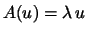 então 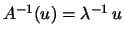). Portanto, como A é simétrica, possui uma base ortonormal de autovetores, que também são autovetores de A-1, e isto carateriza ser simétrica.
Outra forma de justificar, seja B a inversa de A.
Então AB=I=BA. Logo
1.b) A multiplicação de duas matrizes simétricas é uma matriz simétrica.
Falso:
Considere o produtos
1.c) Sejam A uma matriz 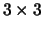 e D uma matriz diagonal tais que A=P D P-1 (onde P é uma matriz inversível). Então A é simétrica.
Falso:
Existem matrizes que são diagonalizáveis (ou seja,
satisfazendo o enunciado) que não são simétricas.
Por exemplo, a matriz
Ou de outra forma,
1.d) Seja A uma matriz diagonalizável. Suponha que B=P A P-1 (onde P é uma matriz inversível). Então B é diagonalizável.
Verdadeiro:
É exatamente a definição matriz diagonalizável:
ser semelhante a uma matriz diagonal.
Observe que
A=MDM-1 onde D é diagonal, logo
1.e) Sejam A uma matriz e 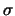 e 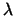 autovalores de A. Então 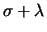 é um autovalor de A.
Falso:
Considere
1.f)
Seja R uma rotação de
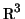 de ângulo
 e eixo de rotação a reta r que contém a
origem. Então, para todo vetor não nulo u de
,
se verifica que o ângulo entre u e R(u) é
e eixo de rotação a reta r que contém a
origem. Então, para todo vetor não nulo u de
,
se verifica que o ângulo entre u e R(u) é  .
.
Falso: A afirmação somente é verdadeira se o vetor é perpendicular ao eixo de rotação. Por exemplo, se u é paralelo ao eixo, independentemente do ângulo de rotação, se verifica R(u)=u. Portanto, o ângulo entre u e R(u) é zero.
1.g) Seja A uma matriz ortogonal . Então o determinante de A é 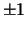.
Verdadeiro: Sejam u, v e w os vetores coluna da matriz. Então, o valor absoluto do determinante de A é 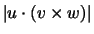, que é o volume do paralelepípedo de arestas u, v e w. Como estes vetores são ortogonais e unitários, dito volume é 1.
Outra forma,
1.h) Seja A uma matriz diagonalizável. Então A3 também é diagonalizável.
Verdadeiro:
É suficiente provar que existe uma base de autovetores de A3.
Como A é diagonalizável, existe uma base de autovetores
de A,
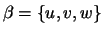 com
,
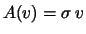 e
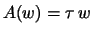(onde , e 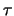 não são necessariamente
diferentes). Temos
 ,
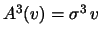 e
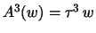.
Portanto, u, v e w são autovetores de A3, assim
é uma base de autovetores de A3 e A3é diagonalizável.
,
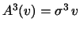 e
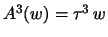.
Portanto, u, v e w são autovetores de A3, assim
é uma base de autovetores de A3 e A3é diagonalizável.
Outra forma,
1.i) Seja A uma matriz 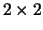 ortogonal e simétrica. Então A é a identidade ou representa um espelhamento.
Falso:
Considere
| Itens | V | F | N | |
| 1.a | v | |||
| 1.b | f | |||
| 1.c | f | |||
| 1.d | v | |||
| 1.e | f | |||
| 1.f | f | |||
| 1.g | v | |||
| 1.h | v | |||
| 1.i | f |
2)
Considere a matriz
Considere agora a matriz B
Resposta:
No caso da projeção. A matriz tem traço 1 (a soma dos
autovalores 1 e 0). Logo c=1/2.
Como a matriz é simétrica, temos a=b.
Como tem determinante zero, temos a2=1/4. Logo
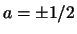.
Logo existem duas possibilidades,
Para o espelhamento,
a matriz tem traço 0 (a soma dos
autovalores 1 e -1). Logo c=-1/2.
Como a matriz é simétrica, temos a=b.
Como é ortogonal, temos
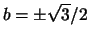.
Logo
existem duas possibilidades,
Finalmente, para o caso da rotação,
a matriz deve
ser ortogonal e não simétrica. Portanto,
pelos argumentos acima, temos
duas possibilidades,
Para a matriz .
Como se trata de uma projeção ortogonal,
a matriz deve ser simétrica. Ou seja a=b=1/3.
Como se trata de uma projeção em uma reta, temos que
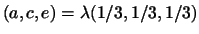e
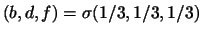.
De a=b=1/3 obtemos
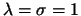. Logo
3)
Considere a transformação linear
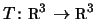tal que
Resposta: Das hipóteses T(1,1,1)=(-1,-1,-1)=-1(1,1,1) e T(1,1,-2)=(1,1,-2) temos que 1 e -1 são autovalores. Como o determinante é nulo e é igual ao produto dos autovalores, o terceiro autovalor é 0.
Já conhecemos dois autovetores. Como a matriz é simétrica, o terceiro autovalor deve ser perpendicular aos outros dois, ou seja, paralelo a 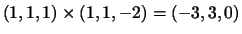. Logo uma base de autovetores é 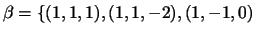.
Escolhendo a base ortonormal de autovetores
4)
Determine quais das matrizes a seguir são diagonalizáveis.
Nos caso afirmativos encontre uma base de autovetores e uma forma
diagonal das matrizes.
Resposta:
A matriz A é triangular. Seus autovalores são os elementos
da diagonal, ou seja, 1, 2 e 3.
Como são diferentes, é diagonalizável, e sua forma diagonal é
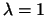,
,
,
Logo uma base de autovetores é .
A matriz B é simétrica. Portanto, é diagonalizável.
Seu polinômio característico é
Finalmente, a matriz Cé triangular. Seus autovalores são os elementos
da diagonal, ou seja, 1 (duplo) e 2.
Para calcular os autovetovetores associados a 1resolvemos